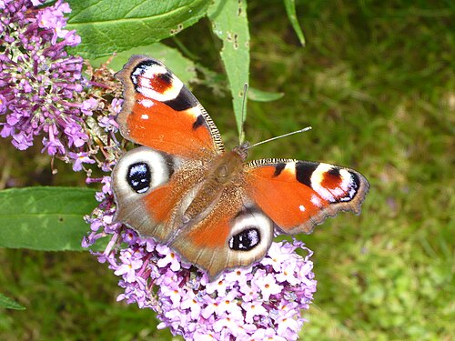

Vítejte na mém webu o motýlech. Najdete zde fotografie, zajímavosti a informace o různých druzích motýlů a jejich životě v přírodě.
Jsou pokryta šupinkami, které odrážejí světlo a dávají jim úžasné barvy.
Některé druhy migrují tisíce kilometrů za vhodnými podmínkami.
Motýli cítí chuť svými nohami, aby poznali vhodné rostliny pro kladení vajíček.